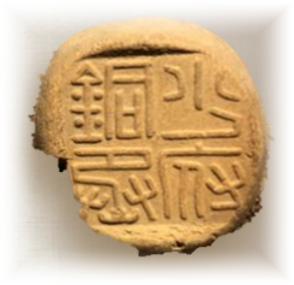
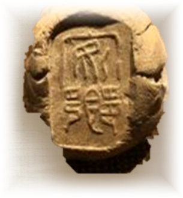
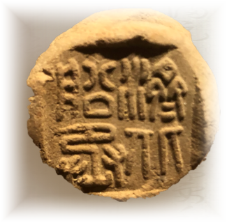
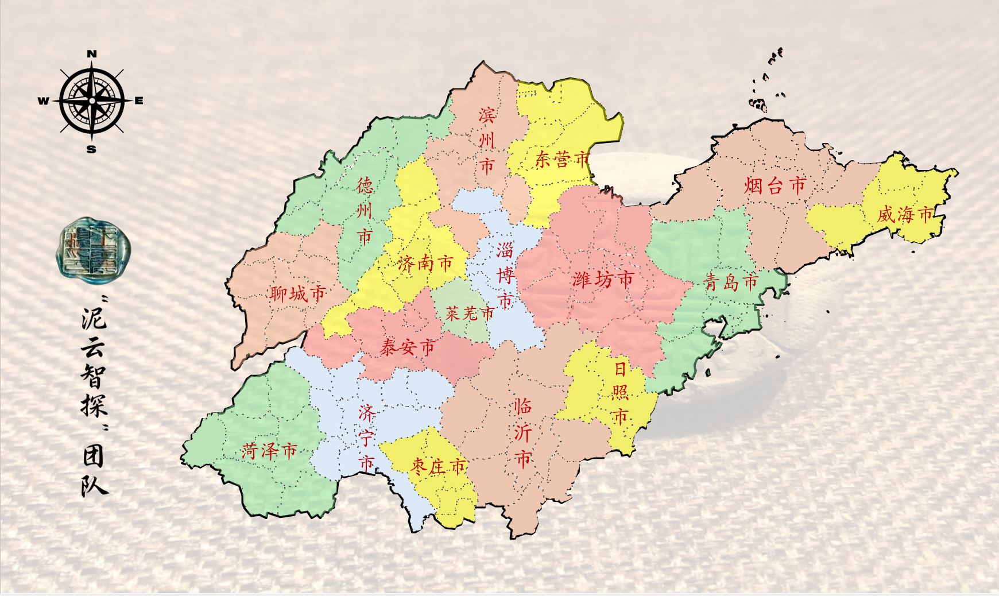
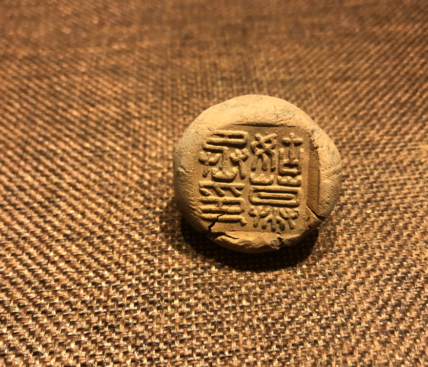
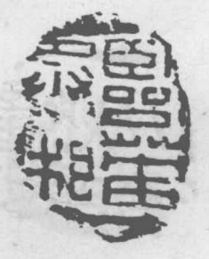
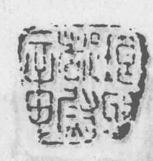

先把实物看仔细
留意泥质、印面凹凸、残损、绳痕和背面留下的细节，尽量保留它原来的样子。
齐鲁封泥智慧人文平台
正在辨识战国秦汉封泥……
文物调研
我们走进博物馆和考古现场，也翻查金石著录与发掘报告，把泥质、印文、出土地和相关文献放在一起核对。
留意泥质、印面凹凸、残损、绳痕和背面留下的细节，尽量保留它原来的样子。
走访博物馆、考古馆和文字研究机构，对照不同馆藏，看看同类封泥之间有什么联系。
一边辨认小篆、缪篆，一边查《汉书》等文献，看看印文对应的是哪种官职和地方制度。
把调研结果放进地图、课程、展陈和 AI 导览里，让线索不只停留在纸面上。
已关注场馆：济南市博物馆 · 济南考古馆 · 青州市博物馆 · 济南章丘博物馆 · 山东博物馆 · 中国文字博物馆 · 齐文化博物馆
认识封泥
封泥不是印章，而是填在结绳处、再盖上官印的防拆凭信。文书送到以后，先验泥上的印痕，再破泥读信。
跟着这方小泥印往前看，你会看到一封古代公文怎样写下、封好、送出，最后又怎样被后人重新发现。
官方文书写在竹简或木牍之上，依序以丝绳编联成册，合上护齿封检，准备进行封缄。
文书盖上封检，绳子交叉穿过方形槽道，再把绳结压进槽底，为后面的封泥留出位置。
选用淘洗沉淀的纯净澄泥团，塞入槽内严实包裹绳结。湿泥柔软易塑，风干后坚硬易碎。

发件官员将随身铜印或玉印按入湿泥中，形成凸起阳文印蜕。印文彰显职权，泥面完好证明未被私拆。
驿使快马传递文书，但在不破坏坚硬泥封与内裹绳结的前提下无法开启，建立起跨地域的公信链条。
收件官署先看看印文和泥封有没有被动过，确认无误后才破泥读信，碎掉的封泥也因此留在了遗址里。

纸张普及后，封泥慢慢退出日常。到了清末，吴式芬、罗振玉、王国维等学者重新辨认它，才让这些泥块再次讲起秦汉的官制和地理。
拖动手卷、使用滚轮或方向键继续展卷



封泥故事
从几方小小的封泥出发，看看古人怎样传公文、管地方，也看看后来的学者怎样把这些线索重新读出来。
汉代公文通过封检刻槽、结绳填泥后钤盖官印，驿使虽经历千山万水，亦无法在不破坏印蜕泥纹的情况下窥看文书，确保政令精准传达与行政追责。
返回故事目录 ↑清道光年间出土封泥初被误认为“古印模”或“异兽模”。山东学者吴式芬与刘鹗、罗振玉、王国维等学者结合《续汉书·百官志》等文献，最终确证其为“封缄之泥”，揭开金石学新纪元。
返回故事目录 ↑临淄齐故城先后出土大量封泥，包括“临淄守印”“淄川丞相”“临菑市丞”“廣陵鄉印”等50余种，全面还原了齐国郡国官署、治安军事、市场贸易与基层治理的立体图景。
返回故事目录 ↑琅琊出土的“琅琊左盐”封泥，见证了汉武帝时期推行盐铁官营政策在齐鲁沿海的推行；配合“齐北船丞”等印信，勾勒出齐鲁便利的水陆漕运与盐利网络。
返回故事目录 ↑齐鲁封泥文化
从官职、仓储、地名和文字几条线索入手，看看封泥怎样帮助我们认识齐鲁的制度与日常。
资料分布
这里收录山东45处现代区县的出土和著录线索。点开一个地方，可以看看它留下了哪些印文，以及这些名字在汉代属于哪里。

正在准备山东 3D 地貌…
这份资料把现代地点、封泥上的字和汉代的郡国县名放在一起。遇到异体字或读不准的地方，也会把原来的疑问保留下来。




可以输入今天的区县名、古地名、印文或郡国名称，找找它们之间的联系。
显示精选 3 处区县资料
我们的工作
封泥很小，字也不容易认，但它留下了古代文书、官署和地方往来的痕迹。我们把实地调研、资料整理和数字工具放在一起，做成更容易亲近的内容。
记录名称、年代、印文、泥色、出土地和文献出处，让线索以后还能查得到。
把古文字、官职和历史地理的关系，换成更容易理解的图文和故事。
用地图、课程、AI导览和文创设计，给不同年龄的人留一个认识封泥的入口。
开源研学课程
从封泥的制作和使用讲起，带着学生和公众认识古文字、历史地图，以及一方小泥印背后的生活。
课程视频素材待接入
从古代简牍公文的保密机制出发，深入解析封泥的制作、系绳、填泥与破封全过程。
封泥牌具设计
这里先看看扑克牌和麻将的 3D 样机。以后换上新的贴图，就能把临淄守印、齐北船丞等文字带到日常使用中。
AI吉祥物
把封泥图片或问题交给印小灵，它会陪你看看字形、猜猜官职，再把相关的齐鲁故事讲给你听。它的回答适合用来入门和找线索，重要判断还要回到专业资料。
AI回答与图片分析仅作辅助研学参考，学术定论请参考专业文博报告。
正在准备 Vue 趣味问答……